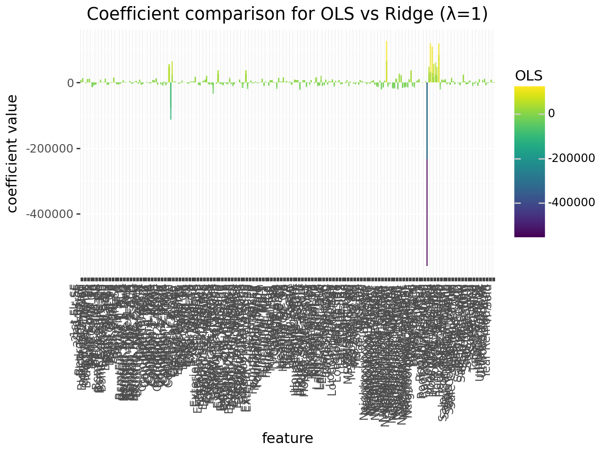
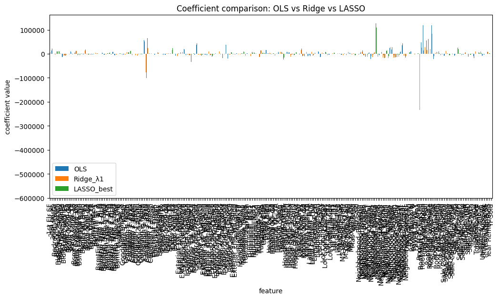
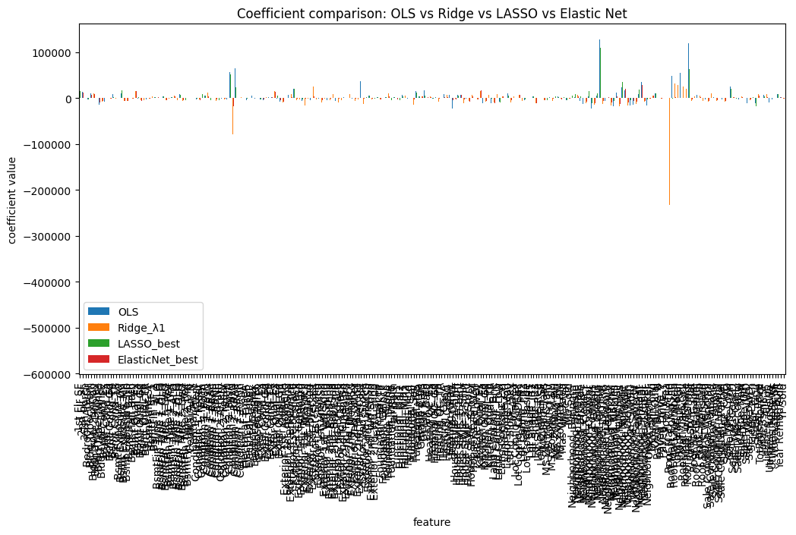

import pandas as pd
import numpy as np
from plotnine import *
from sklearn.pipeline import Pipeline
from sklearn.compose import ColumnTransformer, make_column_selector
from sklearn.preprocessing import OneHotEncoder, StandardScaler
from sklearn.linear_model import LinearRegression, Ridge, Lasso, ElasticNet
from sklearn.model_selection import cross_val_score, GridSearchCVames = pd.read_csv("https://www.dropbox.com/scl/fi/g0n5le5p6fr136ggetfsf/AmesHousing.csv?rlkey=jlr9xtz1o6u5rghfo29a5c02f&dl=1")
good_cols = ames.isna().sum() < 100 # drop mostly-missing columns
ames = ames.loc[:, good_cols].dropna()
X = ames.drop(["SalePrice", "Order", "PID"], axis=1, errors="ignore")
y = ames["SalePrice"]ct = ColumnTransformer(
transformers=[
("cat", OneHotEncoder(sparse_output=False, handle_unknown="ignore"),
make_column_selector(dtype_include=object)),
("num", StandardScaler(),
make_column_selector(dtype_include=np.number)),
],
remainder="passthrough"
)Make a pipeline that uses all the variables in the Ames dataset, and then fits Ridge Regression with lambda = 1
Cross-validate this pipeline and compare the results to the ordinary linear regression.
Then fit the model on the whole dataset and get the coefficients. Make a plot of these coefficients compared to the ones from ordinary linear regression.
ols_pipe = Pipeline([
("pre", ct),
("model", LinearRegression())
])
ridge1_pipe = Pipeline([
("pre", ct),
("model", Ridge(alpha=1.0, random_state=0))
])ols_rmse_scores = cross_val_score(ols_pipe, X, y, cv=5, scoring="neg_root_mean_squared_error")
ols_rmse_mean = -ols_rmse_scores.mean()
ols_rmse_sd = -ols_rmse_scores.std()
print("ols rmse mean: ", ols_rmse_mean)
print("ols rmse sd: ", ols_rmse_sd)ols rmse mean: 29730.707207754294
ols rmse sd: -6602.756088222136ols_r2_scores = cross_val_score(ols_pipe, X, y, cv=5, scoring="r2")
ols_r2_mean = ols_r2_scores.mean()
ols_r2_sd = ols_r2_scores.std()
print("ols r2 mean: ", ols_r2_mean)
print("ols r2 sd: ", ols_r2_sd)ols r2 mean: 0.8538898800207827
ols r2 sd: 0.06027782764862018ridge_rmse_scores = cross_val_score(ridge1_pipe, X, y, cv=5, scoring="neg_root_mean_squared_error")
ridge_rmse_mean = -ridge_rmse_scores.mean()
ridge_rmse_sd = -ridge_rmse_scores.std()
print("ridge rmse mean: ", ridge_rmse_mean)
print("ridge rmse sd: ", ridge_rmse_sd)ridge rmse mean: 28871.91955382137
ridge rmse sd: -6709.583773535257ridge_r2_scores = cross_val_score(ridge1_pipe, X, y, cv=5, scoring="r2")
ridge_r2_mean = ridge_r2_scores.mean()
ridge_r2_sd = ridge_r2_scores.std()
print("ridge r2 mean: ", ridge_r2_mean)
print("ridge r2 sd: ", ridge_r2_sd)ridge r2 mean: 0.8619316345217338
ridge r2 sd: 0.05910380857189079ols_pipe.fit(X, y)
ridge1_pipe.fit(X, y)Pipeline(steps=[('pre',
ColumnTransformer(remainder='passthrough',
transformers=[('cat',
OneHotEncoder(handle_unknown='ignore',
sparse_output=False),
<sklearn.compose._column_transformer.make_column_selector object at 0x7a2252348770>),
('num', StandardScaler(),
<sklearn.compose._column_transformer.make_column_selector object at 0x7a2260958800>)])),
('model', Ridge(random_state=0))])In a Jupyter environment, please rerun this cell to show the HTML representation or trust the notebook. On GitHub, the HTML representation is unable to render, please try loading this page with nbviewer.org.
Pipeline(steps=[('pre',
ColumnTransformer(remainder='passthrough',
transformers=[('cat',
OneHotEncoder(handle_unknown='ignore',
sparse_output=False),
<sklearn.compose._column_transformer.make_column_selector object at 0x7a2252348770>),
('num', StandardScaler(),
<sklearn.compose._column_transformer.make_column_selector object at 0x7a2260958800>)])),
('model', Ridge(random_state=0))])ColumnTransformer(remainder='passthrough',
transformers=[('cat',
OneHotEncoder(handle_unknown='ignore',
sparse_output=False),
<sklearn.compose._column_transformer.make_column_selector object at 0x7a2252348770>),
('num', StandardScaler(),
<sklearn.compose._column_transformer.make_column_selector object at 0x7a2260958800>)])<sklearn.compose._column_transformer.make_column_selector object at 0x7a2252348770>
OneHotEncoder(handle_unknown='ignore', sparse_output=False)
<sklearn.compose._column_transformer.make_column_selector object at 0x7a2260958800>
StandardScaler()
[]
passthrough
Ridge(random_state=0)
cat_names = ols_pipe.named_steps["pre"].transformers_[0][1].get_feature_names_out(
input_features=X.select_dtypes(include="object").columns
)
cat_namesarray(['MS Zoning_C (all)', 'MS Zoning_FV', 'MS Zoning_I (all)',
'MS Zoning_RH', 'MS Zoning_RL', 'MS Zoning_RM', 'Street_Grvl',
'Street_Pave', 'Lot Shape_IR1', 'Lot Shape_IR2', 'Lot Shape_IR3',
'Lot Shape_Reg', 'Land Contour_Bnk', 'Land Contour_HLS',
'Land Contour_Low', 'Land Contour_Lvl', 'Utilities_AllPub',
'Utilities_NoSeWa', 'Utilities_NoSewr', 'Lot Config_Corner',
'Lot Config_CulDSac', 'Lot Config_FR2', 'Lot Config_FR3',
'Lot Config_Inside', 'Land Slope_Gtl', 'Land Slope_Mod',
'Land Slope_Sev', 'Neighborhood_Blmngtn', 'Neighborhood_Blueste',
'Neighborhood_BrDale', 'Neighborhood_BrkSide',
'Neighborhood_ClearCr', 'Neighborhood_CollgCr',
'Neighborhood_Crawfor', 'Neighborhood_Edwards',
'Neighborhood_Gilbert', 'Neighborhood_Greens',
'Neighborhood_GrnHill', 'Neighborhood_IDOTRR',
'Neighborhood_Landmrk', 'Neighborhood_MeadowV',
'Neighborhood_Mitchel', 'Neighborhood_NAmes',
'Neighborhood_NPkVill', 'Neighborhood_NWAmes',
'Neighborhood_NoRidge', 'Neighborhood_NridgHt',
'Neighborhood_OldTown', 'Neighborhood_SWISU',
'Neighborhood_Sawyer', 'Neighborhood_SawyerW',
'Neighborhood_Somerst', 'Neighborhood_StoneBr',
'Neighborhood_Timber', 'Neighborhood_Veenker',
'Condition 1_Artery', 'Condition 1_Feedr', 'Condition 1_Norm',
'Condition 1_PosA', 'Condition 1_PosN', 'Condition 1_RRAe',
'Condition 1_RRAn', 'Condition 1_RRNe', 'Condition 1_RRNn',
'Condition 2_Artery', 'Condition 2_Feedr', 'Condition 2_Norm',
'Condition 2_PosA', 'Condition 2_PosN', 'Condition 2_RRAe',
'Condition 2_RRAn', 'Condition 2_RRNn', 'Bldg Type_1Fam',
'Bldg Type_2fmCon', 'Bldg Type_Duplex', 'Bldg Type_Twnhs',
'Bldg Type_TwnhsE', 'House Style_1.5Fin', 'House Style_1.5Unf',
'House Style_1Story', 'House Style_2.5Fin', 'House Style_2.5Unf',
'House Style_2Story', 'House Style_SFoyer', 'House Style_SLvl',
'Roof Style_Flat', 'Roof Style_Gable', 'Roof Style_Gambrel',
'Roof Style_Hip', 'Roof Style_Mansard', 'Roof Style_Shed',
'Roof Matl_ClyTile', 'Roof Matl_CompShg', 'Roof Matl_Membran',
'Roof Matl_Metal', 'Roof Matl_Roll', 'Roof Matl_Tar&Grv',
'Roof Matl_WdShake', 'Roof Matl_WdShngl', 'Exterior 1st_AsbShng',
'Exterior 1st_AsphShn', 'Exterior 1st_BrkComm',
'Exterior 1st_BrkFace', 'Exterior 1st_CBlock',
'Exterior 1st_CemntBd', 'Exterior 1st_HdBoard',
'Exterior 1st_ImStucc', 'Exterior 1st_MetalSd',
'Exterior 1st_Plywood', 'Exterior 1st_PreCast',
'Exterior 1st_Stone', 'Exterior 1st_Stucco',
'Exterior 1st_VinylSd', 'Exterior 1st_Wd Sdng',
'Exterior 1st_WdShing', 'Exterior 2nd_AsbShng',
'Exterior 2nd_AsphShn', 'Exterior 2nd_Brk Cmn',
'Exterior 2nd_BrkFace', 'Exterior 2nd_CBlock',
'Exterior 2nd_CmentBd', 'Exterior 2nd_HdBoard',
'Exterior 2nd_ImStucc', 'Exterior 2nd_MetalSd',
'Exterior 2nd_Other', 'Exterior 2nd_Plywood',
'Exterior 2nd_PreCast', 'Exterior 2nd_Stone',
'Exterior 2nd_Stucco', 'Exterior 2nd_VinylSd',
'Exterior 2nd_Wd Sdng', 'Exterior 2nd_Wd Shng', 'Exter Qual_Ex',
'Exter Qual_Fa', 'Exter Qual_Gd', 'Exter Qual_TA', 'Exter Cond_Ex',
'Exter Cond_Fa', 'Exter Cond_Gd', 'Exter Cond_Po', 'Exter Cond_TA',
'Foundation_BrkTil', 'Foundation_CBlock', 'Foundation_PConc',
'Foundation_Stone', 'Foundation_Wood', 'Bsmt Qual_Ex',
'Bsmt Qual_Fa', 'Bsmt Qual_Gd', 'Bsmt Qual_Po', 'Bsmt Qual_TA',
'Bsmt Cond_Ex', 'Bsmt Cond_Fa', 'Bsmt Cond_Gd', 'Bsmt Cond_Po',
'Bsmt Cond_TA', 'Bsmt Exposure_Av', 'Bsmt Exposure_Gd',
'Bsmt Exposure_Mn', 'Bsmt Exposure_No', 'BsmtFin Type 1_ALQ',
'BsmtFin Type 1_BLQ', 'BsmtFin Type 1_GLQ', 'BsmtFin Type 1_LwQ',
'BsmtFin Type 1_Rec', 'BsmtFin Type 1_Unf', 'BsmtFin Type 2_ALQ',
'BsmtFin Type 2_BLQ', 'BsmtFin Type 2_GLQ', 'BsmtFin Type 2_LwQ',
'BsmtFin Type 2_Rec', 'BsmtFin Type 2_Unf', 'Heating_GasA',
'Heating_GasW', 'Heating_Grav', 'Heating_OthW', 'Heating QC_Ex',
'Heating QC_Fa', 'Heating QC_Gd', 'Heating QC_Po', 'Heating QC_TA',
'Central Air_N', 'Central Air_Y', 'Electrical_FuseA',
'Electrical_FuseF', 'Electrical_FuseP', 'Electrical_Mix',
'Electrical_SBrkr', 'Kitchen Qual_Ex', 'Kitchen Qual_Fa',
'Kitchen Qual_Gd', 'Kitchen Qual_Po', 'Kitchen Qual_TA',
'Functional_Maj1', 'Functional_Maj2', 'Functional_Min1',
'Functional_Min2', 'Functional_Mod', 'Functional_Sal',
'Functional_Sev', 'Functional_Typ', 'Paved Drive_N',
'Paved Drive_P', 'Paved Drive_Y', 'Sale Type_COD', 'Sale Type_CWD',
'Sale Type_Con', 'Sale Type_ConLD', 'Sale Type_ConLI',
'Sale Type_ConLw', 'Sale Type_New', 'Sale Type_Oth',
'Sale Type_VWD', 'Sale Type_WD ', 'Sale Condition_Abnorml',
'Sale Condition_AdjLand', 'Sale Condition_Alloca',
'Sale Condition_Family', 'Sale Condition_Normal',
'Sale Condition_Partial'], dtype=object)num_names = X.select_dtypes(include=np.number).columns.astype(str)
num_namesIndex(['MS SubClass', 'Lot Area', 'Overall Qual', 'Overall Cond', 'Year Built',
'Year Remod/Add', 'Mas Vnr Area', 'BsmtFin SF 1', 'BsmtFin SF 2',
'Bsmt Unf SF', 'Total Bsmt SF', '1st Flr SF', '2nd Flr SF',
'Low Qual Fin SF', 'Gr Liv Area', 'Bsmt Full Bath', 'Bsmt Half Bath',
'Full Bath', 'Half Bath', 'Bedroom AbvGr', 'Kitchen AbvGr',
'TotRms AbvGrd', 'Fireplaces', 'Garage Cars', 'Garage Area',
'Wood Deck SF', 'Open Porch SF', 'Enclosed Porch', '3Ssn Porch',
'Screen Porch', 'Pool Area', 'Misc Val', 'Mo Sold', 'Yr Sold'],
dtype='object')feat_names = np.r_[cat_names, num_names]coef_df = pd.DataFrame({
"feature": feat_names,
"OLS": ols_pipe.named_steps["model"].coef_[:len(feat_names)],
"Ridge_λ1": ridge1_pipe.named_steps["model"].coef_[:len(feat_names)]
}).set_index("feature")(
ggplot(coef_df.sort_index().reset_index(), aes(x="feature"))
+ geom_bar(aes(y="OLS", fill="OLS"), stat="identity", position="dodge", alpha=0.7)
+ geom_bar(aes(y="Ridge_λ1", fill="Ridge_λ1"), stat="identity", position="dodge", alpha=0.7)
+ labs(title = "Coefficient comparison for OLS vs Ridge (λ=1)",
y = "coefficient value")
+ theme(axis_text_x=element_text(rotation=90, hjust=1))
)
Using the same pipeline as previously, perform tuning on lambda.
You should always try lambda values on a log scale; that is, don't use [1,2,3,4]; instead use something like [0.001, 0.01, 0.1, 1, 10]
ridge_pipe = Pipeline([
("pre", ct),
("model", Ridge(random_state=0))
])param_grid = {"model__alpha": np.logspace(-3, 3, 13)}
param_grid{'model__alpha': array([1.00000000e-03, 3.16227766e-03, 1.00000000e-02, 3.16227766e-02,
1.00000000e-01, 3.16227766e-01, 1.00000000e+00, 3.16227766e+00,
1.00000000e+01, 3.16227766e+01, 1.00000000e+02, 3.16227766e+02,
1.00000000e+03])}gscv_ridge = GridSearchCV(
ridge_pipe, param_grid,
scoring="neg_root_mean_squared_error", cv=5, n_jobs=None
)
gscv_ridge.fit(X, y)GridSearchCV(cv=5,
estimator=Pipeline(steps=[('pre',
ColumnTransformer(remainder='passthrough',
transformers=[('cat',
OneHotEncoder(handle_unknown='ignore',
sparse_output=False),
<sklearn.compose._column_transformer.make_column_selector object at 0x7a2252348770>),
('num',
StandardScaler(),
<sklearn.compose._column_transformer.make_column_selector object at 0x7a2260958800>)])),
('model', Ridge(random_state=0))]),
param_grid={'model__alpha': array([1.00000000e-03, 3.16227766e-03, 1.00000000e-02, 3.16227766e-02,
1.00000000e-01, 3.16227766e-01, 1.00000000e+00, 3.16227766e+00,
1.00000000e+01, 3.16227766e+01, 1.00000000e+02, 3.16227766e+02,
1.00000000e+03])},
scoring='neg_root_mean_squared_error')In a Jupyter environment, please rerun this cell to show the HTML representation or trust the notebook. On GitHub, the HTML representation is unable to render, please try loading this page with nbviewer.org.
GridSearchCV(cv=5,
estimator=Pipeline(steps=[('pre',
ColumnTransformer(remainder='passthrough',
transformers=[('cat',
OneHotEncoder(handle_unknown='ignore',
sparse_output=False),
<sklearn.compose._column_transformer.make_column_selector object at 0x7a2252348770>),
('num',
StandardScaler(),
<sklearn.compose._column_transformer.make_column_selector object at 0x7a2260958800>)])),
('model', Ridge(random_state=0))]),
param_grid={'model__alpha': array([1.00000000e-03, 3.16227766e-03, 1.00000000e-02, 3.16227766e-02,
1.00000000e-01, 3.16227766e-01, 1.00000000e+00, 3.16227766e+00,
1.00000000e+01, 3.16227766e+01, 1.00000000e+02, 3.16227766e+02,
1.00000000e+03])},
scoring='neg_root_mean_squared_error')Pipeline(steps=[('pre',
ColumnTransformer(remainder='passthrough',
transformers=[('cat',
OneHotEncoder(handle_unknown='ignore',
sparse_output=False),
<sklearn.compose._column_transformer.make_column_selector object at 0x7a2248a51df0>),
('num', StandardScaler(),
<sklearn.compose._column_transformer.make_column_selector object at 0x7a224988f260>)])),
('model', Ridge(alpha=np.float64(10.0), random_state=0))])ColumnTransformer(remainder='passthrough',
transformers=[('cat',
OneHotEncoder(handle_unknown='ignore',
sparse_output=False),
<sklearn.compose._column_transformer.make_column_selector object at 0x7a2248a51df0>),
('num', StandardScaler(),
<sklearn.compose._column_transformer.make_column_selector object at 0x7a224988f260>)])<sklearn.compose._column_transformer.make_column_selector object at 0x7a2248a51df0>
OneHotEncoder(handle_unknown='ignore', sparse_output=False)
<sklearn.compose._column_transformer.make_column_selector object at 0x7a224988f260>
StandardScaler()
[]
passthrough
Ridge(alpha=np.float64(10.0), random_state=0)
gscv_ridge.best_params_["model__alpha"]np.float64(10.0)-gscv_ridge.best_score_np.float64(28633.512974899088)Create a LASSO pipeline, and tune lambda.
Fit your best model on the full Ames data, and compare the coefficients to Ridge and OLS
lasso_pipe = Pipeline([
("pre", ct),
("model", Lasso(max_iter=10000, random_state=0))
])param_grid = {"model__alpha": np.logspace(-3, 1, 9)}gscv_lasso = GridSearchCV(
lasso_pipe, param_grid,
scoring="neg_root_mean_squared_error", cv=5
)
gscv_lasso.fit(X, y)/usr/local/lib/python3.12/dist-packages/sklearn/linear_model/_coordinate_descent.py:695: ConvergenceWarning: Objective did not converge. You might want to increase the number of iterations, check the scale of the features or consider increasing regularisation. Duality gap: 2.109e+11, tolerance: 1.348e+09
/usr/local/lib/python3.12/dist-packages/sklearn/linear_model/_coordinate_descent.py:695: ConvergenceWarning: Objective did not converge. You might want to increase the number of iterations, check the scale of the features or consider increasing regularisation. Duality gap: 2.466e+11, tolerance: 1.474e+09
/usr/local/lib/python3.12/dist-packages/sklearn/linear_model/_coordinate_descent.py:695: ConvergenceWarning: Objective did not converge. You might want to increase the number of iterations, check the scale of the features or consider increasing regularisation. Duality gap: 1.988e+11, tolerance: 1.463e+09
/usr/local/lib/python3.12/dist-packages/sklearn/linear_model/_coordinate_descent.py:695: ConvergenceWarning: Objective did not converge. You might want to increase the number of iterations, check the scale of the features or consider increasing regularisation. Duality gap: 1.756e+11, tolerance: 1.407e+09
/usr/local/lib/python3.12/dist-packages/sklearn/linear_model/_coordinate_descent.py:695: ConvergenceWarning: Objective did not converge. You might want to increase the number of iterations, check the scale of the features or consider increasing regularisation. Duality gap: 2.456e+11, tolerance: 1.477e+09
/usr/local/lib/python3.12/dist-packages/sklearn/linear_model/_coordinate_descent.py:695: ConvergenceWarning: Objective did not converge. You might want to increase the number of iterations, check the scale of the features or consider increasing regularisation. Duality gap: 2.109e+11, tolerance: 1.348e+09
/usr/local/lib/python3.12/dist-packages/sklearn/linear_model/_coordinate_descent.py:695: ConvergenceWarning: Objective did not converge. You might want to increase the number of iterations, check the scale of the features or consider increasing regularisation. Duality gap: 1.925e+11, tolerance: 1.474e+09
/usr/local/lib/python3.12/dist-packages/sklearn/linear_model/_coordinate_descent.py:695: ConvergenceWarning: Objective did not converge. You might want to increase the number of iterations, check the scale of the features or consider increasing regularisation. Duality gap: 1.894e+11, tolerance: 1.463e+09
/usr/local/lib/python3.12/dist-packages/sklearn/linear_model/_coordinate_descent.py:695: ConvergenceWarning: Objective did not converge. You might want to increase the number of iterations, check the scale of the features or consider increasing regularisation. Duality gap: 1.756e+11, tolerance: 1.407e+09
/usr/local/lib/python3.12/dist-packages/sklearn/linear_model/_coordinate_descent.py:695: ConvergenceWarning: Objective did not converge. You might want to increase the number of iterations, check the scale of the features or consider increasing regularisation. Duality gap: 2.456e+11, tolerance: 1.477e+09
/usr/local/lib/python3.12/dist-packages/sklearn/linear_model/_coordinate_descent.py:695: ConvergenceWarning: Objective did not converge. You might want to increase the number of iterations, check the scale of the features or consider increasing regularisation. Duality gap: 2.215e+11, tolerance: 1.348e+09
/usr/local/lib/python3.12/dist-packages/sklearn/linear_model/_coordinate_descent.py:695: ConvergenceWarning: Objective did not converge. You might want to increase the number of iterations, check the scale of the features or consider increasing regularisation. Duality gap: 1.570e+11, tolerance: 1.474e+09
/usr/local/lib/python3.12/dist-packages/sklearn/linear_model/_coordinate_descent.py:695: ConvergenceWarning: Objective did not converge. You might want to increase the number of iterations, check the scale of the features or consider increasing regularisation. Duality gap: 1.585e+11, tolerance: 1.463e+09
/usr/local/lib/python3.12/dist-packages/sklearn/linear_model/_coordinate_descent.py:695: ConvergenceWarning: Objective did not converge. You might want to increase the number of iterations, check the scale of the features or consider increasing regularisation. Duality gap: 1.218e+11, tolerance: 1.407e+09
/usr/local/lib/python3.12/dist-packages/sklearn/linear_model/_coordinate_descent.py:695: ConvergenceWarning: Objective did not converge. You might want to increase the number of iterations, check the scale of the features or consider increasing regularisation. Duality gap: 2.553e+11, tolerance: 1.477e+09
/usr/local/lib/python3.12/dist-packages/sklearn/linear_model/_coordinate_descent.py:695: ConvergenceWarning: Objective did not converge. You might want to increase the number of iterations, check the scale of the features or consider increasing regularisation. Duality gap: 3.326e+10, tolerance: 1.348e+09
/usr/local/lib/python3.12/dist-packages/sklearn/linear_model/_coordinate_descent.py:695: ConvergenceWarning: Objective did not converge. You might want to increase the number of iterations, check the scale of the features or consider increasing regularisation. Duality gap: 4.205e+10, tolerance: 1.474e+09
/usr/local/lib/python3.12/dist-packages/sklearn/linear_model/_coordinate_descent.py:695: ConvergenceWarning: Objective did not converge. You might want to increase the number of iterations, check the scale of the features or consider increasing regularisation. Duality gap: 1.148e+11, tolerance: 1.463e+09
/usr/local/lib/python3.12/dist-packages/sklearn/linear_model/_coordinate_descent.py:695: ConvergenceWarning: Objective did not converge. You might want to increase the number of iterations, check the scale of the features or consider increasing regularisation. Duality gap: 7.206e+10, tolerance: 1.407e+09
/usr/local/lib/python3.12/dist-packages/sklearn/linear_model/_coordinate_descent.py:695: ConvergenceWarning: Objective did not converge. You might want to increase the number of iterations, check the scale of the features or consider increasing regularisation. Duality gap: 1.157e+11, tolerance: 1.477e+09
/usr/local/lib/python3.12/dist-packages/sklearn/linear_model/_coordinate_descent.py:695: ConvergenceWarning: Objective did not converge. You might want to increase the number of iterations, check the scale of the features or consider increasing regularisation. Duality gap: 3.013e+09, tolerance: 1.477e+09GridSearchCV(cv=5,
estimator=Pipeline(steps=[('pre',
ColumnTransformer(remainder='passthrough',
transformers=[('cat',
OneHotEncoder(handle_unknown='ignore',
sparse_output=False),
<sklearn.compose._column_transformer.make_column_selector object at 0x7a2252348770>),
('num',
StandardScaler(),
<sklearn.compose._column_transformer.make_column_selector object at 0x7a2260958800>)])),
('model',
Lasso(max_iter=10000,
random_state=0))]),
param_grid={'model__alpha': array([1.00000000e-03, 3.16227766e-03, 1.00000000e-02, 3.16227766e-02,
1.00000000e-01, 3.16227766e-01, 1.00000000e+00, 3.16227766e+00,
1.00000000e+01])},
scoring='neg_root_mean_squared_error')In a Jupyter environment, please rerun this cell to show the HTML representation or trust the notebook. On GitHub, the HTML representation is unable to render, please try loading this page with nbviewer.org.
GridSearchCV(cv=5,
estimator=Pipeline(steps=[('pre',
ColumnTransformer(remainder='passthrough',
transformers=[('cat',
OneHotEncoder(handle_unknown='ignore',
sparse_output=False),
<sklearn.compose._column_transformer.make_column_selector object at 0x7a2252348770>),
('num',
StandardScaler(),
<sklearn.compose._column_transformer.make_column_selector object at 0x7a2260958800>)])),
('model',
Lasso(max_iter=10000,
random_state=0))]),
param_grid={'model__alpha': array([1.00000000e-03, 3.16227766e-03, 1.00000000e-02, 3.16227766e-02,
1.00000000e-01, 3.16227766e-01, 1.00000000e+00, 3.16227766e+00,
1.00000000e+01])},
scoring='neg_root_mean_squared_error')Pipeline(steps=[('pre',
ColumnTransformer(remainder='passthrough',
transformers=[('cat',
OneHotEncoder(handle_unknown='ignore',
sparse_output=False),
<sklearn.compose._column_transformer.make_column_selector object at 0x7a2249781eb0>),
('num', StandardScaler(),
<sklearn.compose._column_transformer.make_column_selector object at 0x7a2248b017f0>)])),
('model',
Lasso(alpha=np.float64(10.0), max_iter=10000,
random_state=0))])ColumnTransformer(remainder='passthrough',
transformers=[('cat',
OneHotEncoder(handle_unknown='ignore',
sparse_output=False),
<sklearn.compose._column_transformer.make_column_selector object at 0x7a2249781eb0>),
('num', StandardScaler(),
<sklearn.compose._column_transformer.make_column_selector object at 0x7a2248b017f0>)])<sklearn.compose._column_transformer.make_column_selector object at 0x7a2249781eb0>
OneHotEncoder(handle_unknown='ignore', sparse_output=False)
<sklearn.compose._column_transformer.make_column_selector object at 0x7a2248b017f0>
StandardScaler()
[]
passthrough
Lasso(alpha=np.float64(10.0), max_iter=10000, random_state=0)
gscv_lasso.best_params_["model__alpha"]np.float64(10.0)-gscv_lasso.best_score_np.float64(29019.05191941983)best_lasso = gscv_lasso.best_estimator_
best_lasso.fit(X, y)
lasso_coef = best_lasso.named_steps["model"].coef_[:len(feat_names)]
lasso_coefarray([-4.51898958e+03, 0.00000000e+00, -0.00000000e+00, 4.59256134e+03,
2.31827307e+03, -2.08235173e+03, -1.70965918e+04, 6.93257761e-10,
-1.16351324e+03, 4.37136675e+03, -0.00000000e+00, 0.00000000e+00,
-9.49462247e+03, 5.42684544e+03, -9.44561591e+03, 1.35861380e+02,
3.64335710e+03, -0.00000000e+00, -0.00000000e+00, 7.90332217e+01,
6.36350586e+03, -5.95620348e+03, -2.90507491e+03, 0.00000000e+00,
-0.00000000e+00, 6.16612008e+03, -1.10426840e+04, 4.81758840e+03,
8.94742519e+03, 1.31928184e+04, 3.75089101e+03, -0.00000000e+00,
-2.66427635e+03, 1.46845352e+04, -1.01570542e+04, -3.79902131e+03,
1.02574836e+04, 1.09304458e+05, -2.35734919e+03, 0.00000000e+00,
7.12699605e+03, -6.36780861e+03, -6.32679579e+03, 1.49640904e+04,
-9.25353657e+03, 3.49564239e+04, 2.80292835e+04, -6.33356337e+03,
-3.72792988e+03, -1.84028112e+03, -3.36693040e+03, 1.87963345e+04,
4.46064027e+04, -3.30087424e+02, -2.60186271e+03, -1.33724270e+03,
-0.00000000e+00, 8.09252946e+03, 6.31479167e+03, 1.29896232e+04,
-3.97709685e+03, 6.52878256e+02, -0.00000000e+00, -4.84906765e+03,
0.00000000e+00, -1.83744063e+03, -0.00000000e+00, 5.21285218e+04,
-1.00831000e+05, 2.29395383e+04, 0.00000000e+00, 0.00000000e+00,
1.00859670e+04, 1.02604690e+04, 0.00000000e+00, -1.12732010e+04,
-5.36695737e+03, -6.11524547e+02, 6.06248109e+03, 6.48785457e+03,
-4.70347957e+03, -1.80229770e+02, -3.62883876e+03, 6.47952900e+03,
9.84282813e+02, -9.83866099e+03, 5.56985035e+02, 0.00000000e+00,
2.23182329e+03, -5.67070340e+03, -0.00000000e+00, -5.66914925e+05,
-1.29180105e+03, 1.41124620e+04, 4.08299102e+03, 0.00000000e+00,
-0.00000000e+00, -1.02883359e+03, 6.27031027e+04, 0.00000000e+00,
0.00000000e+00, 8.78188113e+02, 1.98848454e+04, -0.00000000e+00,
-7.50540668e+01, -2.02859923e+03, -0.00000000e+00, 2.80751593e+03,
-2.46142773e-01, 4.39289475e+04, -0.00000000e+00, 0.00000000e+00,
-4.42465428e+03, 1.12160606e+03, -1.57523802e+02, -0.00000000e+00,
7.38537088e+03, 0.00000000e+00, -6.96726618e+03, -0.00000000e+00,
-0.00000000e+00, 3.34188498e+02, 5.69972515e+03, 0.00000000e+00,
-0.00000000e+00, -1.33474939e+03, 0.00000000e+00, -1.91954595e+03,
1.92178442e+03, 5.97312417e+03, -6.22297159e+02, -9.27329979e+02,
2.38166176e+04, 5.42838893e+03, -3.92690885e+02, -2.09836328e+03,
-2.67673389e+03, -4.24774171e+03, 7.34171160e+02, -0.00000000e+00,
1.07506694e+03, -6.48551134e+02, 0.00000000e+00, 2.37589371e+03,
8.76710000e+03, -4.69157894e+03, 1.82477628e+04, 1.86752457e+03,
-1.11994315e+03, -0.00000000e+00, -0.00000000e+00, -0.00000000e+00,
7.09663430e+02, -4.22167595e+02, 2.27185068e+03, -0.00000000e+00,
5.93809058e+03, 1.64023145e+04, -1.16894926e+03, -1.40204584e+03,
2.19783770e+02, -4.42115947e+02, 3.44861165e+03, -4.15943930e+03,
-2.38193710e+03, 1.73283948e+03, 3.51638026e+03, -3.66652877e+03,
7.26044437e+03, -6.00761204e+03, -4.19322460e+03, 1.52460960e+02,
1.36840456e+03, -0.00000000e+00, 0.00000000e+00, -1.57530061e+04,
3.00587591e+03, -1.86641184e+03, 1.14926679e+03, -0.00000000e+00,
-0.00000000e+00, 2.57686074e+03, -0.00000000e+00, 1.68801473e+02,
-1.60038308e+03, -0.00000000e+00, 0.00000000e+00, -0.00000000e+00,
2.22495227e+04, -0.00000000e+00, -0.00000000e+00, 0.00000000e+00,
-5.71639094e+02, -0.00000000e+00, -3.78934465e+03, 4.33148109e+03,
4.13507590e+03, -0.00000000e+00, -0.00000000e+00, -1.10317016e+04,
1.26508989e+04, 2.55530001e+02, -1.12067050e+03, 0.00000000e+00,
-6.34694910e+03, 0.00000000e+00, 1.96923043e+04, 1.31671466e+03,
-1.46672687e+03, -0.00000000e+00, 5.55758434e+03, 0.00000000e+00,
-0.00000000e+00, -3.27960169e+03, -7.57971990e+03, 1.06129562e+04,
6.38202756e+02, -5.23193705e+03, -0.00000000e+00, 0.00000000e+00,
-3.51622898e+03, 4.25404973e+03, 1.03445695e+04, 6.32854605e+03,
8.43225954e+03, 1.81789395e+03, 2.25493275e+03, 8.93500787e+03,
2.69920596e+03, 9.12078984e+02, 4.47826425e+03, 1.48019952e+04,
2.16210495e+04, 1.20474369e+03, 5.75187803e+03, 1.08300283e+03,
-1.02134670e+03, 2.14873408e+03, 1.24898526e+03, -2.19189756e+03,
-1.90956058e+03, 2.52257263e+02, 2.47257937e+03, 2.04456026e+03,
3.10667095e+03, 6.69195176e+02, -7.64990863e+02, 3.81219404e+02,
4.91332494e+01, 2.60418444e+03, 2.57770812e+03, -4.86264809e+03,
-7.59350040e+02, -6.58663175e+02])coef_df["LASSO_best"] = lasso_coefax = coef_df[["OLS","Ridge_λ1","LASSO_best"]].sort_index().plot(kind="bar", figsize=(12,5))
ax.set_title("Coefficient comparison: OLS vs Ridge vs LASSO")
ax.set_ylabel("coefficient value")Text(0, 0.5, 'coefficient value')
Create an Elastic Net pipeline, and tune lambda and alpha.
Fit your best model on the full Ames data, and compare the coefficients to Ridge and OLS.
e_net_pipe = Pipeline([
("pre", ct),
("model", ElasticNet(max_iter=10000, random_state=0))
])param_grid = {
"model__alpha": np.logspace(-3, 1, 9),
"model__l1_ratio": np.linspace(0.05, 0.95, 7)
}
param_grid{'model__alpha': array([1.00000000e-03, 3.16227766e-03, 1.00000000e-02, 3.16227766e-02,
1.00000000e-01, 3.16227766e-01, 1.00000000e+00, 3.16227766e+00,
1.00000000e+01]),
'model__l1_ratio': array([0.05, 0.2 , 0.35, 0.5 , 0.65, 0.8 , 0.95])}gscv_enet = GridSearchCV(
e_net_pipe, param_grid,
scoring="neg_root_mean_squared_error", cv=5
)
gscv_enet.fit(X, y)/usr/local/lib/python3.12/dist-packages/sklearn/linear_model/_coordinate_descent.py:695: ConvergenceWarning: Objective did not converge. You might want to increase the number of iterations, check the scale of the features or consider increasing regularisation. Duality gap: 1.831e+09, tolerance: 1.348e+09
/usr/local/lib/python3.12/dist-packages/sklearn/linear_model/_coordinate_descent.py:695: ConvergenceWarning: Objective did not converge. You might want to increase the number of iterations, check the scale of the features or consider increasing regularisation. Duality gap: 4.136e+09, tolerance: 1.474e+09
/usr/local/lib/python3.12/dist-packages/sklearn/linear_model/_coordinate_descent.py:695: ConvergenceWarning: Objective did not converge. You might want to increase the number of iterations, check the scale of the features or consider increasing regularisation. Duality gap: 8.619e+09, tolerance: 1.463e+09
/usr/local/lib/python3.12/dist-packages/sklearn/linear_model/_coordinate_descent.py:695: ConvergenceWarning: Objective did not converge. You might want to increase the number of iterations, check the scale of the features or consider increasing regularisation. Duality gap: 5.054e+09, tolerance: 1.407e+09
/usr/local/lib/python3.12/dist-packages/sklearn/linear_model/_coordinate_descent.py:695: ConvergenceWarning: Objective did not converge. You might want to increase the number of iterations, check the scale of the features or consider increasing regularisation. Duality gap: 3.556e+09, tolerance: 1.477e+09
/usr/local/lib/python3.12/dist-packages/sklearn/linear_model/_coordinate_descent.py:695: ConvergenceWarning: Objective did not converge. You might want to increase the number of iterations, check the scale of the features or consider increasing regularisation. Duality gap: 4.620e+11, tolerance: 1.348e+09
/usr/local/lib/python3.12/dist-packages/sklearn/linear_model/_coordinate_descent.py:695: ConvergenceWarning: Objective did not converge. You might want to increase the number of iterations, check the scale of the features or consider increasing regularisation. Duality gap: 5.237e+11, tolerance: 1.474e+09
/usr/local/lib/python3.12/dist-packages/sklearn/linear_model/_coordinate_descent.py:695: ConvergenceWarning: Objective did not converge. You might want to increase the number of iterations, check the scale of the features or consider increasing regularisation. Duality gap: 4.570e+11, tolerance: 1.463e+09
/usr/local/lib/python3.12/dist-packages/sklearn/linear_model/_coordinate_descent.py:695: ConvergenceWarning: Objective did not converge. You might want to increase the number of iterations, check the scale of the features or consider increasing regularisation. Duality gap: 3.788e+11, tolerance: 1.407e+09
/usr/local/lib/python3.12/dist-packages/sklearn/linear_model/_coordinate_descent.py:695: ConvergenceWarning: Objective did not converge. You might want to increase the number of iterations, check the scale of the features or consider increasing regularisation. Duality gap: 5.180e+11, tolerance: 1.477e+09
/usr/local/lib/python3.12/dist-packages/sklearn/linear_model/_coordinate_descent.py:695: ConvergenceWarning: Objective did not converge. You might want to increase the number of iterations, check the scale of the features or consider increasing regularisation. Duality gap: 5.663e+11, tolerance: 1.348e+09
/usr/local/lib/python3.12/dist-packages/sklearn/linear_model/_coordinate_descent.py:695: ConvergenceWarning: Objective did not converge. You might want to increase the number of iterations, check the scale of the features or consider increasing regularisation. Duality gap: 6.414e+11, tolerance: 1.474e+09
/usr/local/lib/python3.12/dist-packages/sklearn/linear_model/_coordinate_descent.py:695: ConvergenceWarning: Objective did not converge. You might want to increase the number of iterations, check the scale of the features or consider increasing regularisation. Duality gap: 5.746e+11, tolerance: 1.463e+09
/usr/local/lib/python3.12/dist-packages/sklearn/linear_model/_coordinate_descent.py:695: ConvergenceWarning: Objective did not converge. You might want to increase the number of iterations, check the scale of the features or consider increasing regularisation. Duality gap: 4.627e+11, tolerance: 1.407e+09
/usr/local/lib/python3.12/dist-packages/sklearn/linear_model/_coordinate_descent.py:695: ConvergenceWarning: Objective did not converge. You might want to increase the number of iterations, check the scale of the features or consider increasing regularisation. Duality gap: 6.411e+11, tolerance: 1.477e+09
/usr/local/lib/python3.12/dist-packages/sklearn/linear_model/_coordinate_descent.py:695: ConvergenceWarning: Objective did not converge. You might want to increase the number of iterations, check the scale of the features or consider increasing regularisation. Duality gap: 5.382e+11, tolerance: 1.348e+09
/usr/local/lib/python3.12/dist-packages/sklearn/linear_model/_coordinate_descent.py:695: ConvergenceWarning: Objective did not converge. You might want to increase the number of iterations, check the scale of the features or consider increasing regularisation. Duality gap: 6.126e+11, tolerance: 1.474e+09
/usr/local/lib/python3.12/dist-packages/sklearn/linear_model/_coordinate_descent.py:695: ConvergenceWarning: Objective did not converge. You might want to increase the number of iterations, check the scale of the features or consider increasing regularisation. Duality gap: 5.769e+11, tolerance: 1.463e+09
/usr/local/lib/python3.12/dist-packages/sklearn/linear_model/_coordinate_descent.py:695: ConvergenceWarning: Objective did not converge. You might want to increase the number of iterations, check the scale of the features or consider increasing regularisation. Duality gap: 4.323e+11, tolerance: 1.407e+09
/usr/local/lib/python3.12/dist-packages/sklearn/linear_model/_coordinate_descent.py:695: ConvergenceWarning: Objective did not converge. You might want to increase the number of iterations, check the scale of the features or consider increasing regularisation. Duality gap: 6.133e+11, tolerance: 1.477e+09
/usr/local/lib/python3.12/dist-packages/sklearn/linear_model/_coordinate_descent.py:695: ConvergenceWarning: Objective did not converge. You might want to increase the number of iterations, check the scale of the features or consider increasing regularisation. Duality gap: 5.435e+11, tolerance: 1.348e+09
/usr/local/lib/python3.12/dist-packages/sklearn/linear_model/_coordinate_descent.py:695: ConvergenceWarning: Objective did not converge. You might want to increase the number of iterations, check the scale of the features or consider increasing regularisation. Duality gap: 6.166e+11, tolerance: 1.474e+09
/usr/local/lib/python3.12/dist-packages/sklearn/linear_model/_coordinate_descent.py:695: ConvergenceWarning: Objective did not converge. You might want to increase the number of iterations, check the scale of the features or consider increasing regularisation. Duality gap: 5.579e+11, tolerance: 1.463e+09
/usr/local/lib/python3.12/dist-packages/sklearn/linear_model/_coordinate_descent.py:695: ConvergenceWarning: Objective did not converge. You might want to increase the number of iterations, check the scale of the features or consider increasing regularisation. Duality gap: 4.427e+11, tolerance: 1.407e+09
/usr/local/lib/python3.12/dist-packages/sklearn/linear_model/_coordinate_descent.py:695: ConvergenceWarning: Objective did not converge. You might want to increase the number of iterations, check the scale of the features or consider increasing regularisation. Duality gap: 6.158e+11, tolerance: 1.477e+09GridSearchCV(cv=5,
estimator=Pipeline(steps=[('pre',
ColumnTransformer(remainder='passthrough',
transformers=[('cat',
OneHotEncoder(handle_unknown='ignore',
sparse_output=False),
<sklearn.compose._column_transformer.make_column_selector object at 0x7a2252348770>),
('num',
StandardScaler(),
<sklearn.compose._column_transformer.make_column_selector object at 0x7a2260958800>)])),
('model',
ElasticNet(max_iter=10000,
random_state=0))]),
param_grid={'model__alpha': array([1.00000000e-03, 3.16227766e-03, 1.00000000e-02, 3.16227766e-02,
1.00000000e-01, 3.16227766e-01, 1.00000000e+00, 3.16227766e+00,
1.00000000e+01]),
'model__l1_ratio': array([0.05, 0.2 , 0.35, 0.5 , 0.65, 0.8 , 0.95])},
scoring='neg_root_mean_squared_error')In a Jupyter environment, please rerun this cell to show the HTML representation or trust the notebook. On GitHub, the HTML representation is unable to render, please try loading this page with nbviewer.org.
GridSearchCV(cv=5,
estimator=Pipeline(steps=[('pre',
ColumnTransformer(remainder='passthrough',
transformers=[('cat',
OneHotEncoder(handle_unknown='ignore',
sparse_output=False),
<sklearn.compose._column_transformer.make_column_selector object at 0x7a2252348770>),
('num',
StandardScaler(),
<sklearn.compose._column_transformer.make_column_selector object at 0x7a2260958800>)])),
('model',
ElasticNet(max_iter=10000,
random_state=0))]),
param_grid={'model__alpha': array([1.00000000e-03, 3.16227766e-03, 1.00000000e-02, 3.16227766e-02,
1.00000000e-01, 3.16227766e-01, 1.00000000e+00, 3.16227766e+00,
1.00000000e+01]),
'model__l1_ratio': array([0.05, 0.2 , 0.35, 0.5 , 0.65, 0.8 , 0.95])},
scoring='neg_root_mean_squared_error')Pipeline(steps=[('pre',
ColumnTransformer(remainder='passthrough',
transformers=[('cat',
OneHotEncoder(handle_unknown='ignore',
sparse_output=False),
<sklearn.compose._column_transformer.make_column_selector object at 0x7a2241e68ce0>),
('num', StandardScaler(),
<sklearn.compose._column_transformer.make_column_selector object at 0x7a2241e683e0>)])),
('model',
ElasticNet(alpha=np.float64(0.1), l1_ratio=np.float64(0.95),
max_iter=10000, random_state=0))])ColumnTransformer(remainder='passthrough',
transformers=[('cat',
OneHotEncoder(handle_unknown='ignore',
sparse_output=False),
<sklearn.compose._column_transformer.make_column_selector object at 0x7a2241e68ce0>),
('num', StandardScaler(),
<sklearn.compose._column_transformer.make_column_selector object at 0x7a2241e683e0>)])<sklearn.compose._column_transformer.make_column_selector object at 0x7a2241e68ce0>
OneHotEncoder(handle_unknown='ignore', sparse_output=False)
<sklearn.compose._column_transformer.make_column_selector object at 0x7a2241e683e0>
StandardScaler()
[]
passthrough
ElasticNet(alpha=np.float64(0.1), l1_ratio=np.float64(0.95), max_iter=10000,
random_state=0)gscv_enet.best_params_{'model__alpha': np.float64(0.1), 'model__l1_ratio': np.float64(0.95)}-gscv_enet.best_score_np.float64(28631.874193477874)best_e_net = gscv_enet.best_estimator_
best_e_net.fit(X, y)Pipeline(steps=[('pre',
ColumnTransformer(remainder='passthrough',
transformers=[('cat',
OneHotEncoder(handle_unknown='ignore',
sparse_output=False),
<sklearn.compose._column_transformer.make_column_selector object at 0x7a2241e68ce0>),
('num', StandardScaler(),
<sklearn.compose._column_transformer.make_column_selector object at 0x7a2241e683e0>)])),
('model',
ElasticNet(alpha=np.float64(0.1), l1_ratio=np.float64(0.95),
max_iter=10000, random_state=0))])In a Jupyter environment, please rerun this cell to show the HTML representation or trust the notebook. On GitHub, the HTML representation is unable to render, please try loading this page with nbviewer.org.
Pipeline(steps=[('pre',
ColumnTransformer(remainder='passthrough',
transformers=[('cat',
OneHotEncoder(handle_unknown='ignore',
sparse_output=False),
<sklearn.compose._column_transformer.make_column_selector object at 0x7a2241e68ce0>),
('num', StandardScaler(),
<sklearn.compose._column_transformer.make_column_selector object at 0x7a2241e683e0>)])),
('model',
ElasticNet(alpha=np.float64(0.1), l1_ratio=np.float64(0.95),
max_iter=10000, random_state=0))])ColumnTransformer(remainder='passthrough',
transformers=[('cat',
OneHotEncoder(handle_unknown='ignore',
sparse_output=False),
<sklearn.compose._column_transformer.make_column_selector object at 0x7a2241e68ce0>),
('num', StandardScaler(),
<sklearn.compose._column_transformer.make_column_selector object at 0x7a2241e683e0>)])<sklearn.compose._column_transformer.make_column_selector object at 0x7a2241e68ce0>
OneHotEncoder(handle_unknown='ignore', sparse_output=False)
<sklearn.compose._column_transformer.make_column_selector object at 0x7a2241e683e0>
StandardScaler()
[]
passthrough
ElasticNet(alpha=np.float64(0.1), l1_ratio=np.float64(0.95), max_iter=10000,
random_state=0)enet_coef = best_e_net.named_steps["model"].coef_[:len(feat_names)]coef_df["ElasticNet_best"] = enet_coef
ax = coef_df[["OLS","Ridge_λ1","LASSO_best","ElasticNet_best"]].sort_index().plot(kind="bar", figsize=(12,6))
ax.set_title("Coefficient comparison: OLS vs Ridge vs LASSO vs Elastic Net")
ax.set_ylabel("coefficient value")Text(0, 0.5, 'coefficient value')